Show other papers
A density-matrix derivation of the Hartree--Fock equations in a nonorthogonal atomic-orbital basis
Authors: Thomas Kjærgaard
Type: theory · Category: numerical methods · PDF: https://arxiv.org/pdf/2605.03761v1
Analysis basis: full PDF text, analyzed in chunks
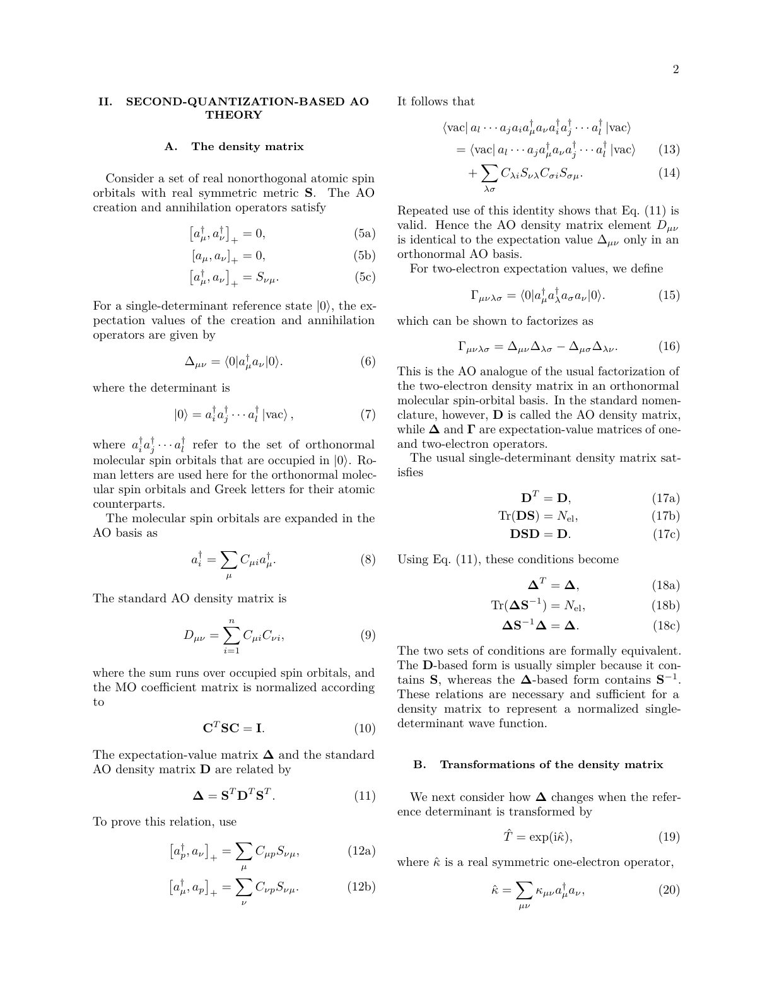
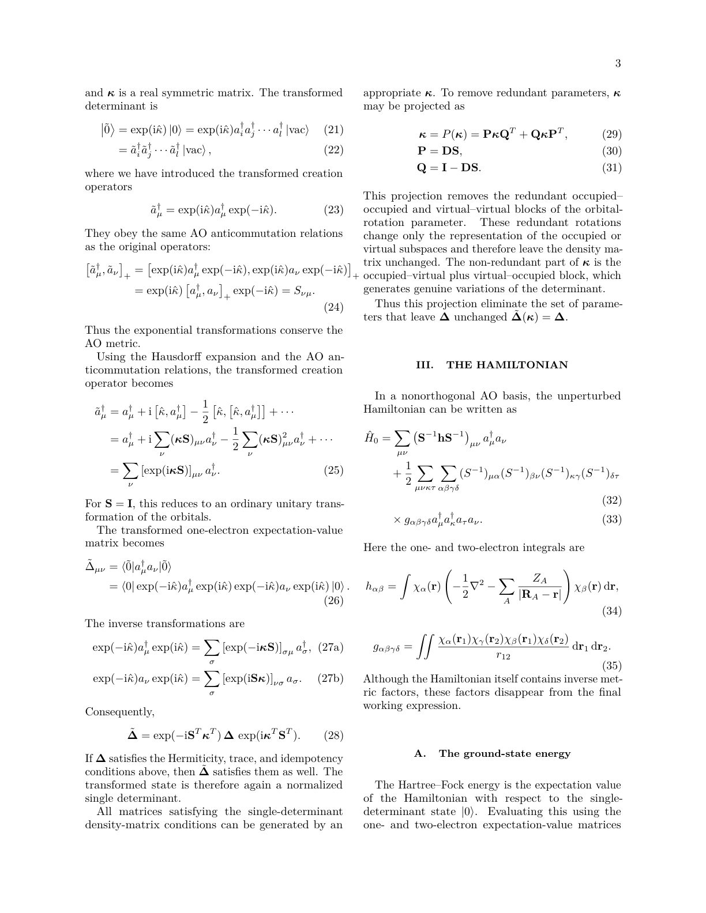
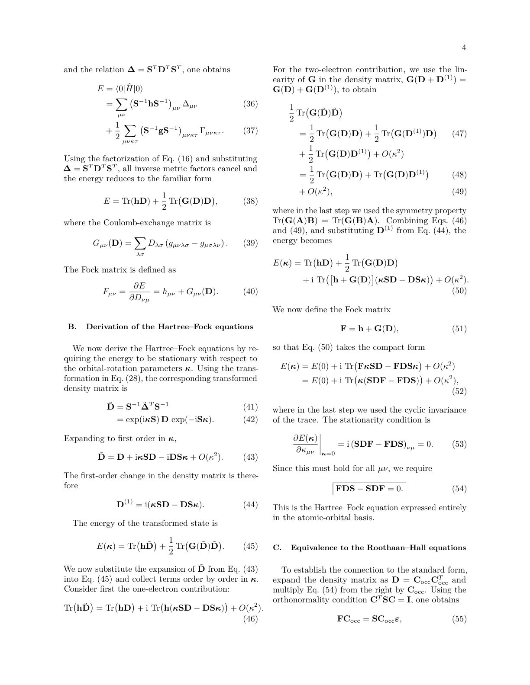
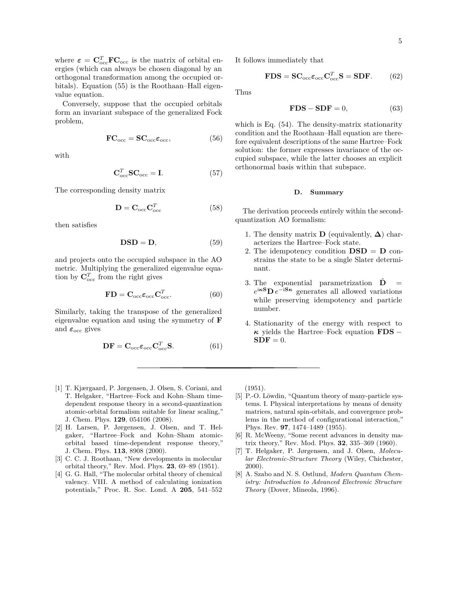
Summary. This paper provides a new, pedagogical way to derive the Hartree-Fock equations using density-matrix machinery. It bridges the gap between basic Hartree-Fock theory and advanced methods used in modern response theory and linear-scaling electronic structure calculations.
Why it may be interesting. not directly relevant
Detailed structure
Main problem. The paper seeks to provide a pedagogical derivation of the Hartree-Fock equations using a density-matrix formalism specifically designed for nonorthogonal atomic-orbital bases.
Main result. The author proves that the density-matrix stationarity condition (FDS - SDF = 0) is mathematically equivalent to the standard Roothaan-Hall eigenvalue equations.
Method. The derivation employs an exponential parametrization of the one-particle density matrix to generate metric-preserving variations and uses second-quantization in a nonorthogonal basis.
Model / system. A many-electron system described by a single-determinant reference state within a finite, linearly independent, real, nonorthogonal atomic-orbital basis.
Key observables. The one-particle density matrix (D), the Fock matrix (F), and the ground-state energy (E).
Important parameters / regimes. The overlap matrix (S) representing the nonorthogonal basis metric, and the orbital-rotation parameters (kappa).
Assumptions / limitations. The system is restricted to a single-determinant (mean-field) approximation, and the basis set is assumed to be finite, real, and linearly independent.
Paper structure. The paper introduces the second-quantization AO formalism, defines the density matrix parametrization, performs the variational derivation of the stationarity condition, and concludes by proving equivalence to the Roothaan-Hall equations.
Abstract
We present a pedagogical derivation of the Hartree--Fock equations using the second-quantization atomic-orbital density-matrix formalism developed by Kjærgaard, Jørgensen, Olsen, Coriani, and Helgaker for AO-based response theory. The purpose is to introduce an alternative derivation of the Hartree--Fock equation, showing that the standard AO Hartree--Fock stationarity condition follows naturally from the exponential parametrization of the one-particle density matrix in a nonorthogonal AO basis. This route provides a compact bridge between elementary Hartree--Fock theory and the density-matrix machinery used in modern response theory and linear-scaling formulations.
Centralizing Task-based Approach to Quantum Network Control
Authors: Alexander Pirker, Robert J. Hayek, Alexander Kolar, Igor Kadota, Joaquin Chung, Rajkumar Kettimuthu
Type: theory · Category: quantum information and computing · PDF: https://arxiv.org/pdf/2605.03336v1
Analysis basis: full PDF text, analyzed in chunks
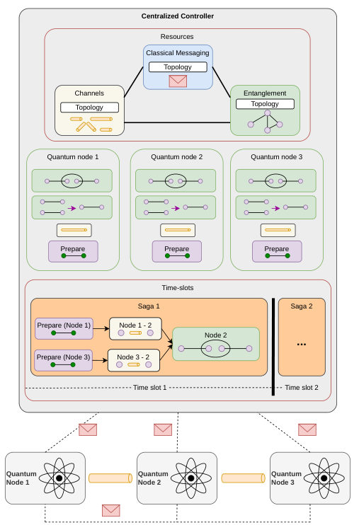
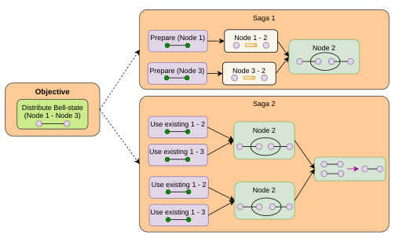
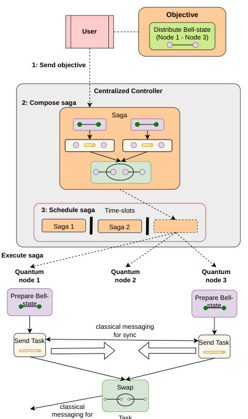
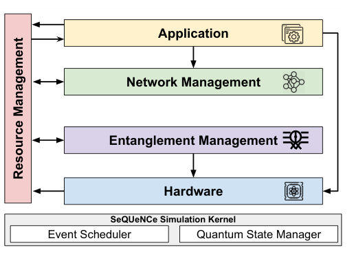
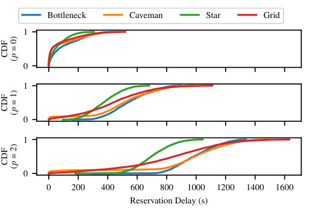
Summary. This paper proposes a shift from traditional layered network protocols to a centralized, task-based approach for managing quantum networks. By treating network requests as distributed workflows (sagas), the framework optimizes resource usage and demonstrates robustness against high traffic loads and varying network topologies.
Why it may be interesting. not directly relevant
Detailed structure
Main problem. Traditional layered/hierarchical quantum network architectures introduce significant latency and timing constraints, leading to state degradation due to decoherence and inefficient resource management.
Main result. A centralized, resource-centric, task-based control framework is shown to be robust under high loads, with Grid and Caveman topologies providing better low-delay delivery than Star topologies due to higher path diversity.
Method. The authors implement a centralized controller using the SeQUeNCe discrete-event simulator, employing a priority-based scheduler and Dijkstra's algorithm to transform user objectives into distributed workflows called 'sagas'.
Model / system. The study models various quantum network topologies (Star, Bottleneck, Grid, and Caveman) consisting of quantum routers and processors connected via optical channels with depolarizing noise and exponential memory decoherence.
Key observables. Request delivery fraction, request delay (latency), entanglement fidelity, scheduling conflicts, and queue size dynamics.
Important parameters / regimes. Network topologies, request arrival rates (lambda), priority levels (0, 1, 2), memory coherence time (2s), and number of reservation requests.
Assumptions / limitations. The study assumes a centralized control architecture and uses simplified error models (Werner states and depolarizing channels) for the quantum hardware.
Figures summary. Figures illustrate the resource-centric architecture, the control flow of sagas, various network topologies, and CDF plots showing request delay, fidelity vs. hops, and scheduling conflicts per node.
Paper structure. The paper introduces the limitations of layered stacks, proposes a resource-centric task-based architecture, details the centralized controller implementation and scheduling algorithm, presents simulation results across different topologies and loads, and concludes with future work directions.
Abstract
For the last decade, layered stacks have dominated the way of reasoning about architectures for quantum networks. However, layered architectures impose stringent design and timing constraints on quantum networks, adding additional latency to the time required to serve an entanglement generation request. Moreover, increasing delays from the layered approach to network control causes degradation of state, effectively minimizing achievable fidelities. In this work we simulate a resource-centric, task-based approach to quantum network control by utilizing a centralized controller. Using the SeQUeNCe quantum network simulator, we implement the centralized controller which tracks quantum memory availability across all nodes, and schedules objectives in an offline fashion using a priority-based scheduler. We evaluate the performance of this controller on multiple topologies (bottleneck, grid, star, caveman) of significant scale, with varying reservation patterns; thereby we demonstrate the viability of the resource-centric task-based quantum network control framework for scaling. Our simulation results show that the caveman and grid topologies have a higher fraction of delivered requests with low delay compared to the star topology, but with a higher fraction of highly delayed requests as well. Furthermore, we find a linear shift of the CDFs in terms of queue size for all topologies depending on the reservation delay. More interestingly, we conclude that the CDFs of priority queues for the star topology converge fast into saturation for increasing request arrival rates, demonstrating together with the other results that the framework is robust for high load scenarios in quantum networks.
Closed form logical error rate approximations for surface codes
Authors: Shaked Regev, Daniel Dilley, Andrea Delgado, Ryan Bennink
Type: theory · Category: quantum information and computing · PDF: https://arxiv.org/pdf/2605.03054v1
Analysis basis: full PDF text, analyzed in chunks
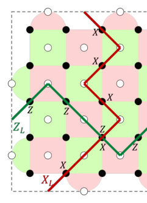
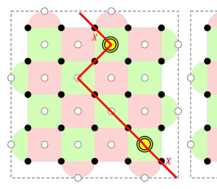
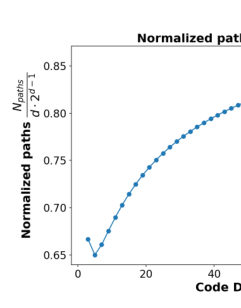
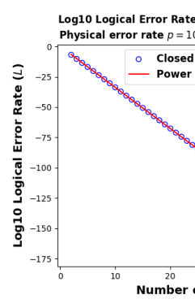
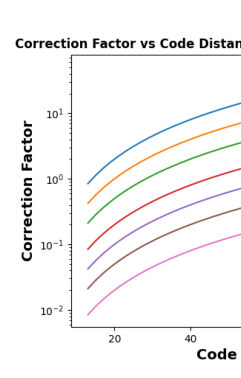
Summary. This paper introduces an efficient method to approximate logical error rates in surface codes without expensive classical simulations. By counting error configurations that lead to logical failure, the authors provide a provably accurate tool for designing and optimizing quantum error correction protocols. This is significant for the rapid assessment of large-scale quantum computer architectures.
Why it may be interesting. not directly relevant
Detailed structure
Main problem. Calculating logical error rates in surface codes is computationally expensive due to the need for intensive classical simulations of quantum decoders or inaccurate extrapolations.
Main result. The authors developed a novel method to derive closed-form, provably accurate approximations for logical error rates by using the symmetry of the problem to count error configurations.
Method. The method uses a combinatorial counting approach and a new algorithm to enumerate error configurations along Minimum-Length Logical Paths (MLLPs) instead of simulating decoders.
Model / system. The study focuses on surface codes, specifically unrotated and rotated planar variants, under an independent and identically distributed (i.i.d.) Pauli error model.
Key observables. Logical error rate (L), physical error rate (p), and threshold error rate (p_th).
Important parameters / regimes. Code distance (d), minimum number of errors for failure (d_e), and the regime where pd^2 << 1.
Assumptions / limitations. The decoder is assumed to be classical and perfect, errors are i.i.d. Pauli errors, and the code distance d is odd.
Figures summary. Figure 1 shows a rotated surface code and syndrome flips; Figure 2 illustrates decoder errors due to high-weight configurations; Figure 3 demonstrates the tightness of the approximation.
Paper structure. The paper progresses from the necessity of QEC to the mechanics of surface codes, identifies the computational bottleneck of current simulations, proposes a combinatorial counting solution, and extends the method to include measurement errors and asymmetric error rates.
Abstract
We propose a novel method to calculate logical error rates in surface codes, assuming independent and identically distributed physical errors. We show how to use our method to analyze hypothetical quantum computers with various configurations and select designs with lower error rates. Currently, this requires expensive classical simulations of quantum decoders for various distances and physical error rates or inaccurate extrapolation from minimal experimental data. Instead, we use the symmetry of the problem to count the configurations that result in a logical error with our novel software. Given a physical error rate, we can deduce the probability of a logical error, to provably good accuracy. We include an analysis of measurement errors to allow a more complete comparison of different surface code implementations.
Coherent transport in non-Abelian quantum graphs
Authors: A. V. Poshakinskiy, L. E. Golub
Type: theory · Category: disordered systems and neural networks · PDF: https://arxiv.org/pdf/2605.03826v1
Analysis basis: full PDF text, analyzed in chunks
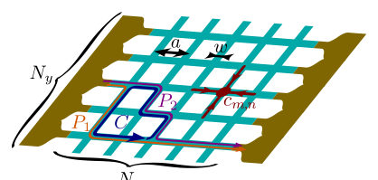
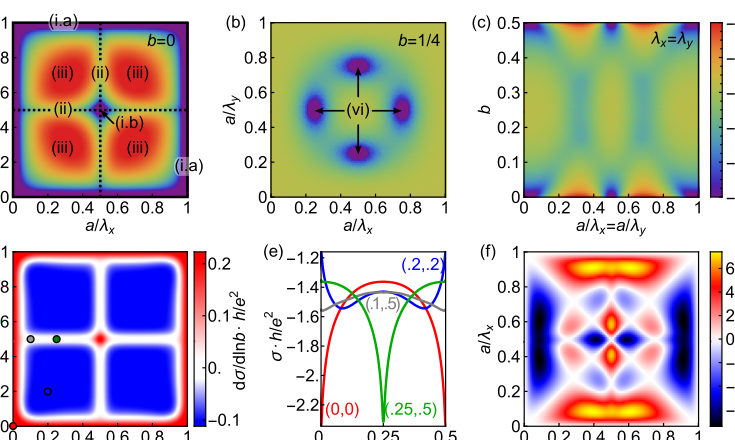
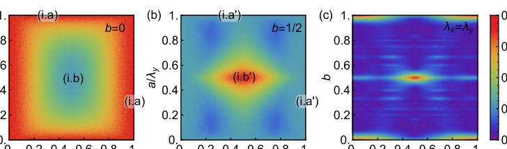
Summary. This paper explores how combining magnetic fields and spin-orbit interactions affects electron transport in 2D networks. It provides a classification of how different topological configurations of these fields lead to distinct patterns of weak localization and conductance oscillations. The findings are significant for understanding transport in mesoscopic semiconductor structures and quantum graphs.
Why it may be interesting. not directly relevant
Detailed structure
Main problem. The study investigates how the interplay between Abelian (magnetic) and non-Abelian (spin-orbit) gauge fields affects coherent charge transport and conductivity in 2D quantum networks.
Main result. The authors classify network configurations into four classes based on the existence of long-lived Cooperon modes and demonstrate that topologically distinct configurations can show identical conductivity in the diffusive regime but different behavior in the ballistic regime.
Method. The study employs quantum graph theory, Cooperon analysis via diffusion equations, and the transfer-matrix technique, mapping the network to a 1D tight-binding Hamiltonian using Wilson link operators.
Model / system. A 2D square network of narrow channels (quantum graph) subject to a U(1) magnetic field and an SO(3) spin-orbit interaction (Rashba and Dresselhaus), modeled by a Schrödinger Hamiltonian with gauge fields.
Key observables. Conductivity (isotropic and anisotropic), conductivity oscillations, and weak-localization/anti-localization corrections.
Important parameters / regimes. Magnetic field strength (AB phase), spin-orbit coupling strength, spin precession length, phase relaxation length, and the ratio of channel width to network period.
Assumptions / limitations. The analysis assumes a specific voltage direction for anisotropy calculations and uses an approximation where the vector potential does not depend on the y-coordinate in the transfer matrix approach.
Figures summary. Figure 1 shows a schematic of the square network and a loop contour for interference; Figure 2 plots conductivity corrections and classifies different field configurations.
Paper structure. The paper introduces the physical system and gauge fields, develops a classification framework for network configurations based on Cooperon modes, compares diffusive and ballistic transport regimes, and analyzes conductivity anisotropy.
Abstract
We study quantum charge transport in two-dimensional networks in the presence of a magnetic field and spin-orbit interaction. The interplay of the corresponding Abelian and non-Abelian gauge fields leads to an intricate behavior of the conductance, which has different periodicities in the diffusive and ballistic regimes. We classify all configurations of magnetic and spin-orbit fields where a logarithmically divergent weak-(anti)localization correction appears in the diffusive regime. The conductivity of topologically distinct configurations is the same in the diffusive regime but different in the ballistic regime. The proposed setup provides a feasible realization of quantum graphs with non-Abelian gauge fields.
Constraining Tsallis Corrections to Photon Reheating from Electron-Positron Annihilation
Authors: Matias P. Gonzalez
Type: theory · Category: statistical mechanics · PDF: https://arxiv.org/pdf/2605.03223v1
Analysis basis: full PDF text, analyzed in chunks
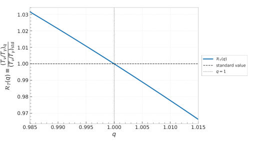
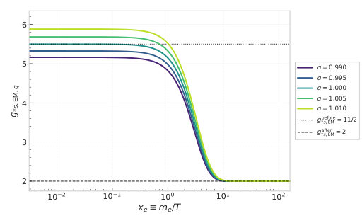
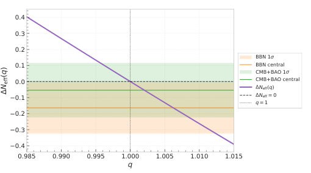
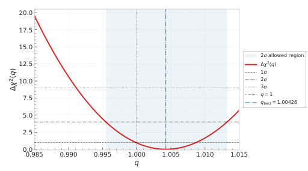
Summary. This paper explores how deviations from standard Boltzmann-Gibbs statistics (Tsallis statistics) would affect the heating of photons during electron-positron annihilation in the early universe. By comparing the model to CMB and BBN data, the author constrains the nonextensivity parameter to be very close to the standard value. This demonstrates that the universe's thermal history during the MeV era is highly consistent with standard extensive thermodynamics.
Why it may be interesting. not directly relevant
Detailed structure
Main problem. Investigating potential departures from standard Boltzmann-Gibbs equilibrium thermodynamics in the early Universe by constraining nonextensive Tsallis statistics during the electron-positron annihilation epoch.
Main result. The study finds a 2-sigma bound of |q-1| <= 1.3e-2, implying that any nonextensive corrections to the electromagnetic sector must remain very small during the MeV era.
Method. The author uses Tsallis nonextensive statistics to modify distribution functions, calculates the resulting change in entropy transfer and temperature ratio, and performs a chi-squared analysis using CMB, BAO, and BBN data.
Model / system. The system is the primordial plasma during the radiation-dominated MeV era, specifically focusing on the electromagnetic sector (photons and electron-positron pairs) and the neutrino sector using the Tsallis entropy functional.
Key observables. Effective number of relativistic species (Neff), temperature ratio (Tnu/Tgamma), and entropic degrees of freedom (g*s).
Important parameters / regimes. Nonextensive parameter (q), mass-to-temperature ratio (xe), and the deviation |q-1|.
Assumptions / limitations. The deformation is applied only to electron-positron pairs while photons are kept extensive; the study uses an instantaneous decoupling approximation for entropy transfer.
Figures summary. Figure 1 shows the evolution of electromagnetic entropic degrees of freedom as a function of the mass-to-temperature ratio; Figure 3 shows the induced shift in Neff.
Paper structure. The paper introduces the Tsallis framework, derives thermodynamic integrals and entropy transfer, maps these to cosmological observables, performs a statistical likelihood analysis with observational data, and concludes with future directions for kinetic treatments.
Abstract
In this work we generalize the entropy transfer from electron-positron annihilation to photons in the early Universe. The generalization is implemented within the Tsallis formalism by using generalized distribution functions derived from Curado-Tsallis constraints. Through this deformation, the entropy density of the electromagnetic sector is modified, while the photon component is kept extensive. Therefore, the nonextensive correction is introduced only in the $e^-e^+$ pairs. This affects the entropic degrees of freedom before electron-positron annihilation and consequently modifies the temperature ratio $T_ν/T_γ$. The resulting correction is then mapped into the effective number of relativistic species, $N_{\rm eff}$. Finally, by performing a combined $χ^2$ analysis using CMB$+$BAO and BBN data, we obtain the $2σ$ bound $|q-1|\leq 1.3\times10^{-2}$ for the nonextensive parameter. This result implies that any departure or correction from Boltzmann-Gibbs extensivity must remain small during the MeV era.
Design and Analysis of Quantum Dual-Containing CSS LDPC Codes based on Quasi-Dyadic Matrices
Authors: Alessio Baldelli, Marco Baldi, Massimo Battaglioni, Franco Chiaraluce, Paolo Santini
Type: theory · Category: quantum information and computing · PDF: https://arxiv.org/pdf/2605.03631v1
Analysis basis: full PDF text, analyzed in chunks
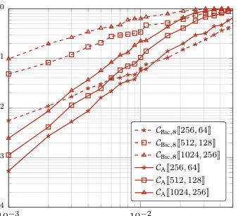
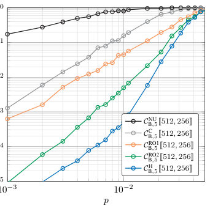
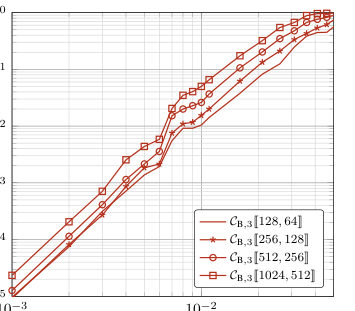
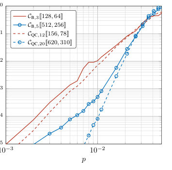
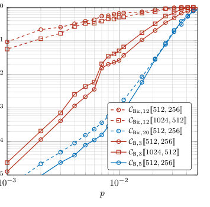
Summary. This paper proposes new methods for constructing high-rate quantum error-correcting codes using quasi-dyadic matrices. These codes are particularly useful because their structure allows for easy implementation of the Hadamard gate and efficient decoding, and they demonstrate superior error-correction performance compared to existing state-of-the-art dual-containing codes.
Why it may be interesting. not directly relevant
Detailed structure
Main problem. The design of high-rate, quantum dual-containing (DC) CSS low-density parity-check (LDPC) codes that allow for efficient transversal gates and low-complexity decoding while avoiding the vanishing rate problem.
Main result. The introduction of two new constructions (A and B) based on quasi-dyadic matrices that achieve high rates and outperform existing bicycle codes in terms of logical error rate under the depolarizing channel.
Method. The authors use algebraic constructions involving quasi-dyadic matrices, dyadic permutation matrices, and a heuristic optimization algorithm to minimize length-4 cycles in the Tanner graph.
Model / system. The study focuses on quantum stabilizer codes within the $n$-qubit Hilbert space subject to a depolarizing error channel.
Key observables. Logical error rate (LER), code rate ($R$), minimum distance ($d$), girth, and the size of the automorphism group.
Important parameters / regimes. Code length ($n$), dimension ($k$), block size ($2^\ell$), and the weight of the dyadic matrix signatures ($v$).
Assumptions / limitations. The performance evaluation is restricted to the standard depolarizing channel, and the constructions are subject to the inherent presence of length-4 cycles due to the dual-containing constraint.
Figures summary. Figure 1 illustrates the parity-check matrix arrangement for Construction A; Figure 2 and Figure 3 show logical error rate comparisons against bicycle codes; Figure 5 and Figure 6 show performance assessments based on varying construction parameters and comparisons with non-DC CSS codes.
Paper structure. The paper begins with the mathematical foundation of dyadic and quasi-dyadic matrices, introduces two specific code constructions (A and B), provides theorems regarding orthogonality and girth, presents a heuristic algorithm for optimization, and concludes with numerical simulations and performance benchmarking.
Abstract
Building scalable quantum computers requires quantum error-correcting codes that enable reliable operations in the presence of noise. Motivated by such need, this paper introduces two constructions of high-rate, quantum dual-containing (DC) Calderbank-Shor-Steane (CSS) low-density parity-check (LDPC) codes based on quasi-dyadic matrices. Their DC structure enables the transversal implementation of the Hadamard gate, and, jointly with the sparsity of their parity-check matrices enable low-complexity decoding via a standard binary belief-propagation algorithm. We provide several theoretical results concerning the cycle properties of these CSS codes. We also investigate their automorphism groups as well as their minimum distance. Furthermore, through numerical simulations, we show that the quantum CSS LDPC codes obtained through these constructions achieve better finite-length error rate performance than existing DC codes across different block lengths and code rates.
Do Venture Capitalists Beat Random Allocation?
Authors: Max Sina Knicker, Jean-Philippe Bouchaud, Michael Benzaquen
Type: experiment · Category: statistical mechanics · PDF: https://arxiv.org/pdf/2605.03980v1
Analysis basis: full PDF text, analyzed in chunks
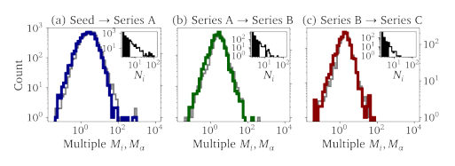
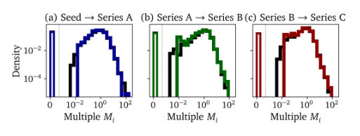
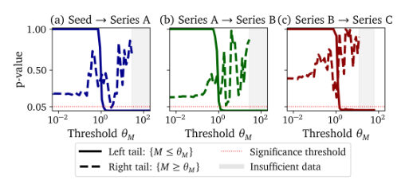
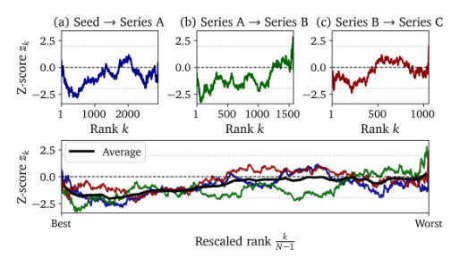
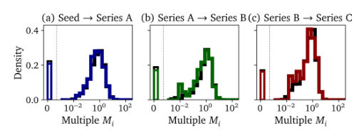
Summary. This paper investigates whether venture capital success is due to skill or random chance in a heavy-tailed environment. By comparing real portfolios to a randomized benchmark, the authors find that even top-performing investors do not significantly exceed what would be expected from random selection. The findings suggest that in highly skewed systems, extreme outcomes are not reliable indicators of underlying driver strength or skill.
Why it may be interesting. not directly relevant
Detailed structure
Main problem. Determining whether venture capital (VC) outperformance is driven by investor skill or is simply a consequence of favorable realizations from a highly skewed, heavy-tailed return distribution.
Main result. Empirical VC portfolio distributions are largely indistinguishable from a constrained random benchmark, suggesting that extreme performance in heavy-tailed environments does not provide evidence of systematic skill.
Method. The authors use a Monte Carlo-based 'conditional random sampling' approach to create a benchmark that preserves portfolio characteristics (timing, geography, sector) while randomizing company selection, then compare distributions using Kolmogorov-Smirnov tests.
Model / system. The study analyzes a large-scale financial dataset of 26,522 startups and 8,249 investors from Crunchbase (2010-2022), treating the venture capital market as a heavy-tailed stochastic system.
Key observables. Startup multiples (M_alpha), portfolio multiples (M_i), rank-based standardized deviation (z-score), and analyst forecast bias/error.
Important parameters / regimes. Funding stages (Seed to Series C), sector composition, geography, and forecasting horizons (0, 5, 11 months).
Assumptions / limitations. The multiple M_alpha is a proxy for growth; the analysis assumes the proportion of shares sold remains consistent between rounds; and the random benchmark assumes a stable underlying return distribution.
Figures summary. Figure 1 shows distributions of startup vs. VC multiples; Figure 2 compares empirical vs. benchmark portfolio distributions; Figure 3 displays p-values from tail-restricted KS tests; Figure 4 plots z-scores; Figures 7-9 show analyst forecast bias and error distributions.
Paper structure. The paper introduces the problem of skill vs. luck in heavy-tailed distributions, describes the dataset and random benchmark construction, presents the statistical comparison of VC portfolios, extends the analysis to a rank-based benchmark, provides a secondary validation using financial analyst forecasts, and concludes with a discussion of the difficulty of detecting signal in noisy, skewed environments.
Abstract
Venture capital outcomes are dominated by a small number of extreme successes, making it difficult to distinguish investor skill from favorable realizations in a highly skewed return distribution. We study this question by comparing empirical VC portfolios to a constrained random benchmark that preserves key portfolio characteristics, including timing, geography, sector composition, and portfolio size, while randomizing individual company selection. Across funding stages, empirical portfolio distributions appear remarkably close to their random benchmarks. We find no evidence that portfolio construction increases the probability of high-multiple outcomes: the right tail remains statistically indistinguishable from random allocation. Deviations in the lower part of the distribution are small and sensitive to the interpretation of zero outcomes, suggesting at most weak evidence of downside improvement. We further introduce a rank-based benchmark distribution to evaluate outperformance at each position in the cross-section. This analysis shows that even the best-performing portfolios do not exceed the outcomes expected for their rank under random sampling. Our results suggest that VC portfolio outcomes are largely consistent with constrained random allocation, highlighting the difficulty of identifying aggregate skill in heavy-tailed investment environments. A similar conclusion holds for the performance of financial analysts in predicting future earnings.
Edge-Based Anisotropic Decoding for Generalized Bicycle Codes
Authors: Dimitris Chytas, Paul N. Fessatidis, Boulat A. Bash, Bane Vasić
Type: theory · Category: quantum information and computing · PDF: https://arxiv.org/pdf/2605.03218v1
Analysis basis: full PDF text, analyzed in chunks
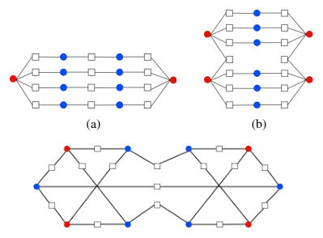
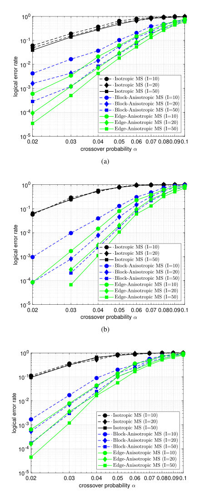
Summary. This paper addresses the problem of degeneracy in QLDPC code decoding, where symmetries in the code structure cause iterative decoders to fail. By applying edge-based anisotropic decoding to break these symmetries, the authors achieve improved error correction performance for Generalized Bicycle codes.
Why it may be interesting. not directly relevant
Detailed structure
Main problem. Standard iterative decoders for Quantum Low-Density Parity-Check (QLDPC) codes fail to exploit the code's distance because they cannot resolve symmetries (automorphisms) that lead to harmful degenerate error patterns.
Main result. The authors demonstrate that edge-anisotropic decoding, which uses graph coloring to break symmetries, can eliminate harmful automorphisms in Generalized Bicycle (GB) codes and significantly improve decoding performance.
Method. The study uses a graph-theoretic framework to characterize degeneracy and compares three decoding schemes: isotropic, block-anisotropic, and edge-anisotropic Min-Sum decoding using graph coloring/labeling.
Model / system. The work focuses on the family of Generalized Bicycle (GB) codes, specifically the Bivariate Bicycle (BB) subclass, represented via Tanner graphs and CSS stabilizer structures.
Key observables. Logical error rate, decoding performance, and the number of harmful configurations (automorphisms) in the Tanner subgraph.
Important parameters / regimes. Iteration budgets (10, 20, 50 iterations), damping parameters (within the interval [0.5, 1]), and crossover probability.
Assumptions / limitations. The analysis assumes a short iteration regime and utilizes an 'isolation assumption' where nodes outside the induced subgraph of interest are assumed to have converged.
Figures summary. Figure 1 illustrates induced Tanner subgraphs with color-coded variable nodes; Figure 2 shows plots of logical error rate versus crossover probability for different GB codes comparing the three decoding schemes.
Paper structure. The paper begins with a graph-theoretic characterization of degeneracy, moves to a comparison of different coloring/labeling schemes (no coloring, block, and edge), presents experimental performance results using Min-Sum decoding, and concludes with discussion on limitations and future work.
Abstract
Quantum low-density parity-check (QLDPC) codes provide non vanishing rates, distance scaling with the blocklength of the code, and facilitate fast iterative decoding because of their sparsity. However, in practice iterative decoding fails to exploit the distance of the code, because it cannot resolve the symmetries imposed by degeneracy. In this work, we provide a graph theoretic characterization of degeneracy for the family of generalized bicycle (GB) codes. This viewpoint shows that harmful degenerate error patterns persist whenever they remain related by automorphisms preserved by the decoder. Motivated by symmetry breaking via graph coloring, we compare three coloring approaches: no coloring, block-coloring, and edge-coloring. For GB codes, we show that edge-coloring can eliminate all automorphisms in low-weight stabilizer-induced subgraphs. We practically realize the coloring schemes as isotropic, block- anisotropic and edge-anisotropic min-sum (MS) decoding. Experimental results show that edge anisotropic min-sum decoding obtains improved performance over isotropic and block anisotropic decoding for several GB codes in a small number of iterations.
Epistatic strength, modularity, and locus heterogeneity shape the number of local optima in fitness landscapes
Authors: Mahan Ghafari, Alejandro Castro Cabrera, Alejandro Lage-Castellanos, Guillaume Achaz, Joachim Krug, Luca Ferretti
Type: theory · Category: disordered systems and neural networks · PDF: https://arxiv.org/pdf/2605.03046v1
Analysis basis: full PDF text, analyzed in chunks
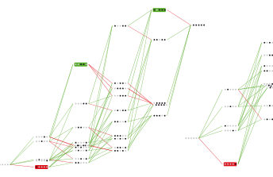
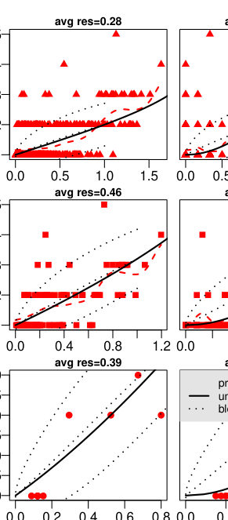
Summary. This paper provides a predictive framework for the number of local optima in fitness landscapes based on the strength and spatial distribution of epistatic interactions. It demonstrates that while local epistasis sets a baseline for unstructured landscapes, the arrangement of interactions into modules or heterogeneous sites can significantly increase or decrease landscape ruggedness.
Why it may be interesting. not directly relevant
Detailed structure
Main problem. Determining the quantitative relationship between epistasis strength and the number of local optima in fitness landscapes, and understanding how the spatial structure of interactions (clustering and heterogeneity) affects landscape ruggedness.
Main result. The expected number of local optima in unstructured landscapes is determined by a single local measure of epistasis (correlation of fitness effects), while clustering interactions increases peak density and locus heterogeneity causes peak density to collapse.
Method. Development of an analytical framework using Gaussian random fields, Fourier expansion over genotype networks, and scaling analysis in the large-sequence limit.
Model / system. Fitness landscapes modeled as isotropic Gaussian random fields, including unstructured (mean-field) models, NK-like models, and structured models with clustering (blocks) and locus heterogeneity.
Key observables. Number of local optima (fitness peaks), peak density, exponential scaling rate of peak density, and fraction of reciprocal sign epistasis.
Important parameters / regimes. Correlation of fitness effects (gamma), sequence length (L), number of alleles (A), clustering parameter (beta), and heterogeneity parameter (h).
Assumptions / limitations. Assumes unstructured landscapes are isotropic Gaussian random fields and that interactions follow a Gaussian-distributed epistatic spectrum.
Figures summary. Figures illustrate how landscapes with identical global roughness can have different peak counts, the impact of clustering on peak numbers, and how heterogeneity suppresses peak density.
Paper structure. The paper introduces the problem of peak density, establishes a baseline for unstructured Gaussian landscapes, analyzes the effects of interaction clustering, investigates the impact of locus heterogeneity, and concludes by reconciling these findings with reciprocal sign epistasis.
Abstract
Fitness landscapes provide a quantitative framework for understanding how natural selection shapes evolutionary trajectories. A central feature of these landscapes is their number of local optima, which determines whether fitness-increasing evolution can proceed towards a global optimum or become trapped on suboptimal peaks. Although multiple peaks are known to require reciprocal sign epistasis, the quantitative relationship between epistasis and number of peaks remains incompletely understood. Here, we show that for a broad class of unstructured fitness landscapes, i.e. isotropic Gaussian random fields, the expected number of local optima is determined by a single local measure of epistasis: the correlation of fitness effects. This provides a baseline prediction for the number of peaks in typical unstructured landscapes and links peak density directly to the amount of reciprocal sign epistasis. This baseline changes when epistatic interactions are structured. We show that clustering interactions within blocks of loci slightly increases the number of local optima. In contrast, strong heterogeneity between loci, where only a small subset of loci participate in epistatic interactions, causes the number of peaks to collapse. These results show that the number of local optima is governed not only by the overall strength of epistasis, but also by how epistatic interactions are distributed across the genotype space. Our framework therefore reconciles the central role of reciprocal sign epistasis with the observation that landscapes with similar amounts of epistasis can differ substantially in ruggedness, and provides a guide to the range of peak numbers expected in typical landscapes.
Expanding functional protein sequence space using high entropy generative models
Authors: Roberto Netti, Emily Hinds, Francesco Calvanese, Rama Ranganathan, Martin Weigt, Francesco Zamponi
Type: both · Category: disordered systems and neural networks · PDF: https://arxiv.org/pdf/2605.03578v1
Analysis basis: full PDF text, analyzed in chunks
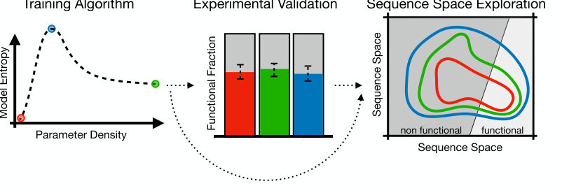
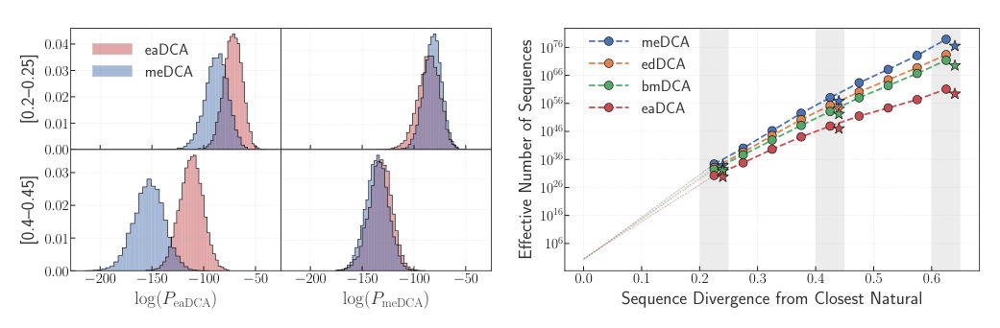
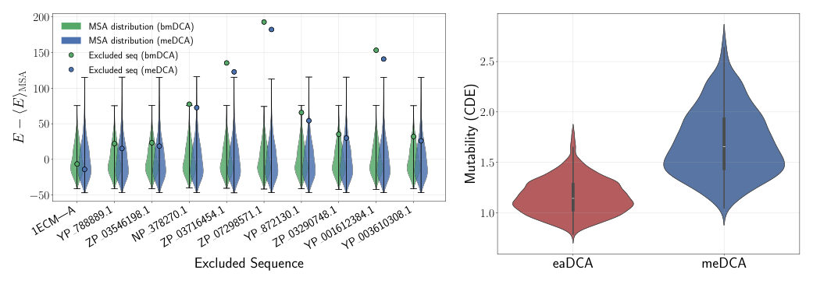
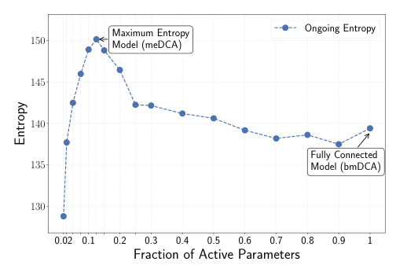
Summary. The paper demonstrates that optimizing the entropy of Boltzmann-based generative models allows for the discovery of a functional protein sequence space that is orders of magnitude larger than that accessible by dense or overfitted models. By using an edge decimation strategy, the authors identify a maximum-entropy regime that accurately represents the neutral evolutionary landscape. This provides a framework for more efficient and diverse de novo protein design.
Why it may be interesting. not directly relevant
Detailed structure
Main problem. Investigating how the relationship between model architecture (parameter density/sparsity) and entropy affects the ability of generative Boltzmann Machines to capture the evolutionary fitness landscape and expand functional protein sequence space.
Main result. The identified maximum-entropy model (meDCA) accesses a functional sequence space more than fifteen orders of magnitude larger than low-entropy models and better captures the local neutral spaces of natural proteins without overfitting.
Method. The study uses Direct Coupling Analysis (DCA) frameworks, specifically comparing fully connected (bmDCA), edge decimation (edDCA), and edge activation (eaDCA) models, validated via in vivo E. coli complementation assays.
Model / system. The physical system is the protein sequence space of the AroQ Chorismate Mutase enzyme family, modeled using a Potts model (Boltzmann Machine) with a Hamiltonian consisting of single-site potentials and pairwise couplings.
Key observables. Shannon entropy (S), parameter density, functional fraction (success rate), sequence divergence, Context-Dependent Entropy (CDE), and mixing time.
Important parameters / regimes. Parameter density (ranging from ~3% to 100%), sequence divergence levels (20-65%), and the entropy peak during the decimation trajectory.
Assumptions / limitations. Assumes that the coevolutionary statistics captured by the model are a reliable proxy for the underlying evolutionary fitness landscape; assumes the use of thermodynamic integration for entropy estimation.
Figures summary. Figure 1 shows the workflow and the non-monotonic entropy trajectory; Figure 2 compares functional rates across divergence bins; Figure 3 illustrates generalization via energy assignment and site-specific mutability; Figure 4 shows the entropy evolution during pruning.
Paper structure. The paper introduces the problem of model architecture in protein design, describes the DCA model variants and the decimation/activation algorithms, presents experimental validation of functional sequences, quantifies the expansion of sequence space via entropy, and concludes with a comparison to Transformer-based models.
Abstract
Boltzmann Machines trained on evolutionary sequence data have emerged as a powerful paradigm for the data-driven design of artificial proteins. However, the relationship between model architecture, specifically parameter density, and experimental performance remains poorly understood. Here, we investigate this relationship using the Chorismate Mutase enzyme family as a model system. We compare standard fully connected Boltzmann Machines for Direct Coupling Analysis (bmDCA) with sparse models generated via progressive edge activation (eaDCA) and edge decimation (edDCA). We identify a maximum-entropy model (meDCA) along the decimation trajectory that represents an optimal balance between constraint satisfaction and the flexibility of the probability distribution. We synthesized and tested artificial sequences from all models using an in vivo complementation assay, finding that all architectures, regardless of sparsity, generate functional enzymes with high success rates, even at significant divergence from natural sequences. Despite this functional equivalence, we demonstrate that the meDCA model samples a viable sequence space that is more than fifteen orders of magnitude larger than its low-entropy counterparts. Furthermore, comparative analyses reveal that high-entropy models systematically minimize overfitting and better capture the local neutral spaces surrounding natural proteins. These findings suggest that while various models satisfying coevolutionary statistics can generate functional sequences, high-entropy Boltzmann Machines provide a superior representation of the underlying evolutionary fitness landscape.
ffsim: Faster simulation of fermionic quantum circuits
Authors: Kevin J. Sung, Inho Choi, Mirko Amico, Bartholomew Andrews, Esra Ayantuna, Yukio Kawashima, Wan-Hsuan Lin, David Omanovic, Samuele Piccinelli, Javier Robledo Moreno, Abdullah Ash Saki, James Shee, Soyoung Shin, Minh C. Tran, Kento Ueda, Haimeng Zhang, Mario Motta
Type: theory · Category: numerical methods · PDF: https://arxiv.org/pdf/2605.03123v1
Analysis basis: full PDF text, analyzed in chunks
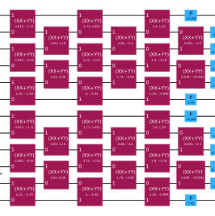
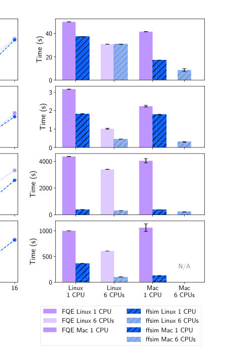
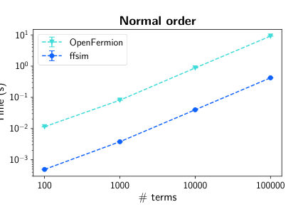
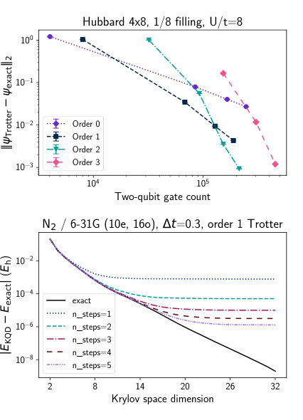
Summary. The paper introduces ffsim, a new software library designed for the fast classical simulation of fermionic quantum circuits. By exploiting physical symmetries like particle number conservation, it enables much larger-scale simulations than general-purpose qubit simulators. This tool is particularly useful for testing variational ansätze and Hamiltonian time evolution for molecular and lattice models.
Why it may be interesting. It provides a highly efficient classical tool for benchmarking and validating fermionic quantum algorithms, which is crucial for the development of near-term quantum hardware for chemistry and materials science.
Detailed structure
Main problem. The high memory and computational cost of general-purpose quantum circuit simulators when simulating large-scale fermionic systems.
Main result. The development of ffsim, an open-source library that achieves significant speedups and memory reductions (e.g., simulating 64 qubits with only 19.3 GiB instead of 256 EiB) by exploiting particle number and spin symmetries.
Method. An exact state vector simulation approach using a Python-based library with Rust extensions, utilizing symmetry-based Hilbert space decomposition, Givens rotations, and integration with PySCF and Qiskit.
Model / system. Fermionic systems including molecular Hamiltonians (e.g., N2), the 2D Hubbard model, and diagonal Coulomb Hamiltonians, characterized by conserved particle number and z-component of spin.
Key observables. Expectation values of Hamiltonians, ground state energies, and Trotter errors.
Important parameters / regimes. Number of spatial orbitals, particle number (filling fraction), and Trotter step size/order.
Assumptions / limitations. The performance benefits are limited to systems where particle number and z-component of spin are conserved; the simulator is an exact state vector method, so it still scales exponentially with system size.
Figures summary. Figure 1 shows a Qiskit circuit for a Jastrow ansatz; Figure 2 compares ffsim performance against FQE and Qiskit Aer for various tasks; Figure 3 shows sampling and normal ordering speedups; Figure 4 illustrates Trotter error scaling and KQD energy error convergence.
Paper structure. The paper introduces the ffsim library, details its mathematical foundation and symmetry-based optimizations, describes its integration with existing chemistry and quantum software, presents performance benchmarks against existing simulators, and demonstrates practical applications in Hubbard model and molecular simulations.
Abstract
We present ffsim, an open-source software library for fast simulation of fermionic quantum circuits. ffsim exploits conservation of particle number and the z component of spin, symmetries present in a wide range of fermionic systems, to dramatically reduce memory usage and simulation time compared to general-purpose quantum circuit simulators. Compared to FQE, a library with similar functionality, ffsim differs in software design and is faster on a representative set of simulation benchmarks. Beyond state vector evolution by basic fermionic gates, ffsim offers a number of additional features including variational ansatzes, Hamiltonian time evolution via Trotter-Suzuki product formulas, efficient sampling of Slater determinants, seamless integration with Qiskit and PySCF, and comprehensive documentation. We demonstrate ffsim's capabilities on scientific applications involving quantum circuits of up to 64 qubits.
From Enhanced Sampling to Human-Readable Representations of Protein Dynamics
Authors: Souvik Mondal, Michael A. Sauer, Matthias Heyden
Type: theory · Category: statistical mechanics · PDF: https://arxiv.org/pdf/2605.03394v1
Analysis basis: full PDF text, analyzed in chunks
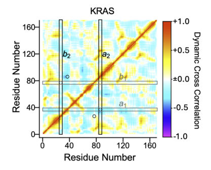
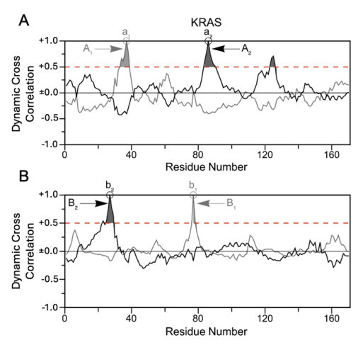
Summary. This paper presents an automated workflow to convert complex, non-intuitive collective variables from enhanced sampling simulations into simple, human-readable geometric distances. By identifying correlated protein domains, the method allows researchers to reconstruct interpretable free energy landscapes for various proteins. This bridges the gap between high-dimensional simulation data and physical structural intuition.
Why it may be interesting. not directly relevant
Detailed structure
Main problem. The difficulty in interpreting complex, high-dimensional, or machine-learning-derived collective variables (CVs) used in enhanced sampling simulations of protein conformational dynamics.
Main result. A fully automated framework that transforms complex enhanced sampling trajectories into human-readable, interpretable geometric descriptors (domain-domain distances) without losing essential dynamical information.
Method. The approach uses FRESEAN mode analysis to identify low-frequency vibrations, performs well-tempered metadynamics, and applies a post hoc analysis of weighted Dynamic Cross-Correlation Matrices (DCCM) to identify and group correlated residues into domains.
Model / system. The study focuses on protein conformational dynamics, using specific proteins such as KRAS, HIV-1 protease, HEWL, MCL-1, and RBP as test cases for all-atom molecular dynamics simulations.
Key observables. Dynamic Cross-Correlation Matrix (DCCM) elements, domain-domain distances (dA, dB), and Free Energy Surfaces (FES).
Important parameters / regimes. Correlation threshold (e.g., +0.5) for domain identification and the use of the two lowest-frequency vibrational modes as CVs.
Assumptions / limitations. The effectiveness of the method still depends on the quality of the initial CVs, and the validity of harmonic approximations is limited for the lowest frequencies.
Figures summary. Figure 1 shows DCCM for KRAS; Figure 2 shows numerical correlation values and thresholding; Figure 3 maps identified domains on the KRAS sequence; Figure 4/5 shows the conformational ensemble and free energy surfaces for KRAS; Figure 6 illustrates the complete automated protocol.
Paper structure. The paper introduces the problem of CV interpretability, presents the automated framework (vibration detection to distance extraction), validates the method using KRAS as a primary case study, demonstrates generalization to other proteins, and concludes with the implications for machine learning integration.
Abstract
Understanding protein conformational dynamics is essential for elucidating biological function but remains challenging due to the wide range of timescales and the complexity of collective motions. Enhanced sampling methods overcome timescale limitations of conventional molecular dynamics, yet their effectiveness depends on the choice of collective variables (CVs), which are often difficult to define and may lack physical interpretability. In particular, collective variables derived from machine learning or collective vibrational modes can efficiently capture slow dynamics but are not easily mapped onto intuitive structural descriptors. Here, we present a fully automated framework that transforms enhanced sampling trajectories into human-readable representations of protein dynamics. Our approach combines enhanced sampling along CVs derived from frequency-selective anharmonic mode analysis with a post hoc analysis of biased trajectories using weighted dynamic cross-correlation matrices. From these, we identify residue pairs and domains exhibiting correlated and anti-correlated motions, yielding simple domain-domain distances that serve as physically interpretable CVs. We apply this method to five proteins, including KRAS and HIV-1 protease, and show that it consistently identifies biologically relevant domains and motions without prior system-specific knowledge. Projection onto these distances produces free energy surfaces that reproduce known conformational states with low statistical uncertainty while maximizing independent dynamical information. This workflow enables systematic recasting of complex CVs into simple geometric descriptors without loss of essential dynamics. Its generality and automation make it broadly applicable for interpreting enhanced sampling simulations and generating interpretable conformational ensembles for integration with emerging machine learning approaches.
Gossamer Superconductivity in Moiré WSe$_2$ Bilayer
Authors: Hui-Ke Jin, Guangyue Ji, Zhan Wang, Jie Wang, Fu-Chun Zhang
Type: theory · Category: strongly correlated electrons · PDF: https://arxiv.org/pdf/2605.03766v1
Analysis basis: full PDF text, analyzed in chunks
Summary. This paper proposes that superconductivity in twisted WSe2 is a 'gossamer' state where charge fluctuations are partially suppressed but not frozen. The model explains the transition from a Mott insulator to a superconductor and the extreme sensitivity of the superconducting state to density doping. This provides a theoretical framework for using moire materials as simulators for Hubbard physics.
Why it may be interesting. not directly relevant
Detailed structure
Main problem. Understanding the origin and nature of the superconductivity discovered in twisted WSe2 bilayers at half-filling and zero displacement field, specifically how it emerges from a Mott insulating state.
Main result. The authors propose a 'gossamer' superconducting phase characterized by a finite density of mobile carriers despite strong Coulomb repulsion, stabilized by the interplay of extended kinetic hopping and antiferromagnetic superexchange.
Method. The study employs Renormalized Mean-Field Theory (RMFT) applied to an effective single-orbital extended Hubbard model, using Gutzwiller-projected wavefunctions and a variational approach.
Model / system. The system is a moire bilayer WSe2 (tWSe2) modeled by an effective single-orbital extended Hubbard model on a triangular lattice, including nearest, second, and third-neighbor hopping (t1, t2, t3) and antiferromagnetic superexchange (J).
Key observables. Gutzwiller renormalization factor (g), pairing symmetry (chiral d+id-wave), double occupancy (di), and Chern number (C).
Important parameters / regimes. Twist angle (theta), carrier density (nu), Coulomb repulsion (U), hopping amplitudes (t1, t2, t3), and superexchange (J).
Assumptions / limitations. The use of a mean-field framework with specific trial wavefunctions and the approximation of non-local correlation effects via the Gutzwiller approximation.
Figures summary. Figure 1 shows low-energy band structures and topological properties; Figure 3 displays the phase diagram in the t2-t3 parameter space; Figure 4 compares hopping parameters from different Wannierization methods; Figure 5 shows real-space density distributions of Wannier orbitals.
Paper structure. The paper begins by mapping the continuum moire system to a lattice model, introduces the effective Hubbard Hamiltonian, applies Renormalized Mean-Field Theory to investigate the phase diagram, and concludes by comparing results to experimental observations of twist-angle-dependent phase evolution.
Abstract
Moiré transition metal dichalcogenides have served as a versatile platform for simulating Hubbard physics. Recent experiments have identified robust superconductivity in moiré bilayer WSe$_2$ for certain twist angles. Here, we propose the gossamer nature of the superconductivity recently discovered at half-filling and zero displacement field in twisted WSe$_2$. By mapping the moiré continuum system to an effective extended single-orbital Hubbard model on the triangular lattice, we employ renormalized mean-field theory to investigate the strong-coupling phase diagram. We find that a moderate Coulomb repulsion partially suppresses charge fluctuations while preserving a finite density of mobile doublons and holes. In this regime, the interplay between extended kinetic hoppings and antiferromagnetic superexchange stabilizes a chiral $d+id$ superconducting phase. Our results naturally account for the twist-angle-dependent evolution from a Mott insulator to a superconductor and eventually to a correlated metal. Furthermore, the model demonstrates that this half-filled pairing state vanishes rapidly upon density doping, consistent with experimental observations.
Influence of ligand field and correlation on the electronic structure of NiO and CoO from DFT+DMFT calculations
Authors: Daniel Mutter, Frank Lechermann, Daniel F. Urban, Christian Elsässer
Type: theory · Category: strongly correlated electrons · PDF: https://arxiv.org/pdf/2605.03526v1
Analysis basis: full PDF text, analyzed in chunks
Summary. This paper uses advanced DFT+DMFT calculations to study how crystal structure and electron correlation affect the electronic properties of NiO and CoO. By including self-interaction corrections for oxygen orbitals, the authors achieve much better agreement with experimental spectroscopic data. The study highlights the critical role of ligand field and oxygen-mediated correlations in transition metal oxides.
Why it may be interesting. not directly relevant
Detailed structure
Main problem. Investigating how the interplay of ligand field (crystal structure), electron correlation strength, and oxygen 2p correlations influences the electronic structure and spectral functions of NiO and CoO.
Main result. Applying self-interaction correction (SIC) to oxygen 2p orbitals significantly improves the calculated band gap for CoO (5.1 eV) to match experiment and shifts the energy separation between metal and oxygen bands to more realistic values.
Method. A charge self-consistent combination of Density Functional Theory and Dynamical Mean Field Theory (DFT+DMFT) using a Continuous-time Quantum Monte Carlo (CTHYB) solver and a self-interaction-correction (SIC) scheme for oxygen orbitals.
Model / system. Paramagnetic NiO and CoO in both rock-salt (octahedral) and zincblende (tetrahedral) crystal structures, modeled using a multi-orbital Hubbard model with a rotationally invariant Slater Hamiltonian.
Key observables. Spectral functions (total, element-projected, and orbital-projected), density of states (DOS), band gaps, and centers of gravity (COGs) of electronic bands.
Important parameters / regimes. Hubbard interaction parameter (U), Hund's exchange coupling (J), charge-transfer energy (delta), and crystal field splitting (10Dq).
Assumptions / limitations. Correlation effects are explicitly treated only within the transition-metal 3d orbital subspace; the system is treated in its paramagnetic configuration.
Figures summary. Figure 1 shows LDA-DFT band structure and DOS for CoO; Figure 2 illustrates spectral functions for CoO; Figure 3 compares CoO spectral functions with experimental XPS, BIS, and UPS data; Figure 4 and 5 show the effects of SIC on the centers of gravity and energy separation (delta Epd) across different structures.
Paper structure. The paper introduces the problem of TMO electronic structure, describes the DFT+DMFT+SIC methodology, presents comparative results for different crystal structures (RS vs ZB) and correlation strengths (U), and concludes with a validation against experimental spectroscopy.
Abstract
The intriguing physics and rich application potential of strongly correlated first-row transition metal oxide compounds result from the complex interplay of several factors that influence the electronic structure. To shed light on the effect of composition, structure, and correlation strength, we apply a well-established charge self-consistent combination of density functional theory and dynamical mean field theory, which has proven to give electron binding energies in good agreement to experimentally derived excitation spectra. For paramagnetic NiO and CoO, we analyze the effect of rock-salt and zincblende structures and their different ligand fields on the spectral functions. By varying the value of the interaction parameter U, different correlation strengths among the transition-metal 3d electrons are considered, as well as the effect of additionally accounting for correlations in the oxygen 2p orbitals by a self-interaction-correction pseudopotential scheme.
Mitigating Classical Resource Costs in Quantum Error Correction via Generalized qLDPC Predecoding
Authors: Alexander Knapen, Junyi Luo, Guanchen Tao, Yuxuan Wang, Tomas Bruno, Qirui Zhang, Dennis Sylvester, Mehdi Saligane, Gokul Subramanian Ravi
Type: both · Category: quantum information and computing · PDF: https://arxiv.org/pdf/2605.03180v1
Analysis basis: full PDF text, analyzed in chunks
Summary. This paper presents Arqade, an automated framework for designing efficient predecoders for any qLDPC code to alleviate the classical computational burden of quantum error correction. By handling simple errors in a lightweight first layer, it significantly reduces the workload on complex second-level decoders, enabling much more scalable quantum-classical interfaces.
Why it may be interesting. not directly relevant
Detailed structure
Main problem. The scaling of fault-tolerant quantum computing is bottlenecked by the high classical computational cost and resource contention at the quantum-classical interface, particularly for complex qLDPC codes.
Main result. The Arqade framework automates the generation of lightweight predecoders that can reduce decoder utilization by up to 3,963x and OSD utilization by up to 72.71% while maintaining logical error rates.
Method. The authors introduce Arqade, an automated framework that uses syndrome measurement circuits and detector error models to generate predecoding primitives, which are then mapped to hardware using a graph coloring approach for pipeline construction.
Model / system. The study focuses on quantum error correction using qLDPC codes, including surface, color, bivariate bicycle (BB), and RQT codes, under a circuit-level SI1000 noise model.
Key observables. Logical error rate (LER), decoder utilization, decoding latency, predecoding coverage, and hardware metrics like power, area, and LUT utilization.
Important parameters / regimes. Physical error rates ($10^{-4}$ to $5 \cdot 10^{-3}$), stabilizer weights, and power limits (e.g., 1.5 W at 4 K).
Assumptions / limitations. The evaluated codes are primarily CSS codes, and the framework assumes the availability of a second-level decoder like BP-OSD.
Figures summary. Figures illustrate the decoder allocation problem, the Arqade framework workflow, predecoding primitive examples, pruning strategies, hardware pipeline construction via graph coloring, and performance comparisons of LER and coverage across different code types.
Paper structure. The paper introduces the resource contention problem, defines the Arqade framework for automated predecoder construction, details the hardware pipeline synthesis using graph coloring, presents performance evaluations on various qLDPC codes, and analyzes hardware PPA (Power, Performance, Area) for FPGA and cryogenic ASIC implementations.
Abstract
Quantum-classical interfaces (QCIs) for fault-tolerant quantum computing must manage simultaneous, real-time decoding across thousands to millions of logical qubits. Scaling these architectures necessitates sharing expensive decoding resources among logical qubits, which introduces severe resource contention within the QCI. While resolving these bottlenecks through efficient resource distribution remains a persistent challenge, lightweight predecoding holds promise to alleviate strain on shared decoding components by decreasing average latency and decoder usage. Notably, research into both decoder allocation and predecoding has been strictly confined to the surface code. With the growing emphasis on general quantum low-density parity-check (qLDPC) codes, slower decoding speeds will intensify resource contention, while the inherent complexity of these codes will render manual predecoder design unfeasible. To address this gap, we introduce an automated framework designed to generate predecoders for arbitrary qLDPC codes. These automatically constructed predecoders autonomously process over 90% of the decoding workload, cutting overall decoder utilization by up to 3,963x. This includes a reduction of up to 72.71% in computationally demanding ordered statistics decoding (OSD). Furthermore, we detail a highly efficient, pipelined hardware design that allows for the concurrent decoding of approximately 1,200 bivariate bicycle (BB) code logical qubits using a single FPGA. When implemented as a cryogenic ASIC, the architecture scales to support between 36,000 and 360,000 BB code logical qubits, operating within a 1.5 W power limit at 4 K.
Nature of magnetism in bilayer nickelate La3Ni2O7 single crystals
Authors: Lixing Chen, Enkang Zhang, Yiqing Hao, Yinghao Zhu, Bingkun Cui, Douglas L. Abernathy, Travis J. Williams, Yoichi Ikeda, Hao Zhang, Feiyang Liu, Wenbin Wang, Qisi Wang, Jun Zhao
Type: experiment · Category: strongly correlated electrons · PDF: https://arxiv.org/pdf/2605.03448v1
Analysis basis: full PDF text, analyzed in chunks
Summary. This paper uses neutron scattering to characterize the magnetic ground state of the bilayer nickelate La3Ni2O7. It reveals a stripe-type magnetic order with significant interlayer coupling and a unique spectrum of spin excitations. These findings provide a new magnetic framework that differs from cuprates and is critical for understanding superconductivity in nickelates.
Why it may be interesting. not directly relevant
Detailed structure
Main problem. The study aims to resolve the nature of magnetism and spin dynamics in the ambient-pressure parent phase of bilayer nickelates (La3Ni2O7), which is essential for understanding the pairing mechanism in their high-temperature superconducting phase.
Main result. The researchers identified a single-stripe magnetic order with strong interlayer antiferromagnetic coupling and anisotropic in-plane dispersions, establishing a magnetic framework that is distinct from cuprates due to enhanced mid-energy spin excitations.
Method. The study uses inelastic and elastic neutron scattering on high-quality single crystals grown via the optical floating-zone method, with data analysis involving linear spin-wave theory simulations.
Model / system. The physical system is the bilayer nickelate La3Ni2O7, modeled using a bilayer Heisenberg Hamiltonian that includes interlayer exchange (Jc), next-nearest-neighbor coupling (J2), and anisotropic in-plane couplings (J1a, J1b) within a stripe-type magnetic order.
Key observables. Magnetic Bragg peaks, spin-excitation dispersions, spin gap, L-dependent intensity modulations, and local dynamic susceptibility.
Important parameters / regimes. Magnetic transition temperature TN ~ 151 K, spin gap ~ 5 meV, spin-wave bandwidth ~ 70 meV, and exchange parameters such as Jc = 39.86 meV.
Assumptions / limitations. The analysis assumes the spin dynamics can be accurately captured by a Heisenberg-type Hamiltonian and relies on the quality of the single-crystal growth to rule out phase separation.
Figures summary. Figure 1 shows the magnetic structure, susceptibility, and Bragg peaks; Figure 2 presents constant-energy slices of excitations; Figure 3 displays measured and calculated spin-wave dispersions; Figure 4 shows constant-energy cuts and the energy dependence of local susceptibility.
Paper structure. The paper introduces the motivation regarding nickelate superconductivity, describes the crystal growth and neutron scattering techniques, presents the magnetic structure and spin dynamics results, compares the findings to cuprates, and concludes with the implications for the superconducting mechanism.
Abstract
The recent discovery of high-temperature superconductivity in pressurized and thin film nickelates has generated intense interest, yet the nature of magnetism in their ambient-pressure parent phases remains poorly understood, despite its potentially crucial role in pairing. Here we use neutron scattering to resolve the spin order and dynamics of single-crystalline La3Ni2O7, an ambient-pressure parent of this class. Well defined spin excitations are observed at Q = (0, 0.5, 2.5), featuring a~5 meV spin gap and anisotropic in-plane dispersions, with zone-boundary softening along the transverse direction indicative of competing exchange interactions. The excitations exhibit pronounced out-of-plane modulations with bilayer periodicity, providing direct evidence for antiferromagnetic interlayer coupling. Their dispersion is well described by a bilayer Heisenberg Hamiltonian with strong interlayer exchange and competing in-plane couplings within a stripe-type magnetic order. Normalization of the spectra to absolute units reveals that, although the spin-wave bandwidth is only about 25% of that in cuprates, the local dynamic susceptibility at comparable energies is significantly enhanced, yielding a total fluctuating moment of comparable magnitude. These results highlight intense mid-energy spin excitations rooted in substantial electronic correlations as a defining feature of this family, establishing a magnetic framework distinct from cuprates and directly relevant to understanding superconductivity in this system.
Numerical evidence of a critical point in the (2+1)D SO(5) nonlinear sigma model with Wess-Zumino-Witten term
Authors: Yuan Da Liao, Bin-Bin Chen, Fakher F. Assaad, Lukas Janssen, Zi Yang Meng
Type: theory · Category: strongly correlated electrons · PDF: https://arxiv.org/pdf/2605.03700v1
Analysis basis: full PDF text, analyzed in chunks
Summary. The authors developed a highly efficient quantum Monte Carlo algorithm to study the SO(5) WZW model. They successfully mapped out a phase diagram that includes a multicritical point and provided evidence that the SO(5)-symmetric disordered phase is likely a weakly gapped state, resolving a long-standing debate in the field.
Why it may be interesting. not directly relevant
Detailed structure
Main problem. Determining the global phase diagram and the nature of the critical point in the (2+1)D SO(5) nonlinear sigma model with a Wess-Zumino-Witten term.
Main result. The study identifies a critical point separating an SO(5)-broken ordered phase from an SO(5)-symmetric disordered phase and demonstrates that the disordered phase is likely a weakly gapped phase rather than a unitary CFT.
Method. An optimized continuous-field quantum Monte Carlo (CF-DQMC) algorithm using Langevin dynamics and a Metropolis acceptance condition, which achieves a significant computational speedup.
Model / system. A (2+1)D SO(5) nonlinear sigma model with a level-1 Wess-Zumino-Witten term, regularized by projecting onto the lowest Landau level of half-filled Dirac fermions in both spherical and torus geometries.
Key observables. SO(5) order parameter, scaling dimensions (delta_v and delta_s), correlation ratios, and the dynamical critical exponent (z).
Important parameters / regimes. SO(5) coupling strength (u), anisotropy parameter (alpha), and system size (number of magnetic fluxes, N_phi).
Assumptions / limitations. The theory is regularized via projection onto the lowest Landau level; the Trotter decomposition introduces a systematic error of O(delta_tau^2).
Figures summary. Figure 1 shows RG flow scenarios; Figure 2 displays the SO(5) order parameter and scaling dimensions; Figure 3 illustrates the VBS-disorder transition; Figure 5 provides a benchmark of the new algorithm against DMRG.
Paper structure. The paper introduces the physical model and the new CF-DQMC algorithm, presents the phase diagram identification on different geometries, discusses the nature of the critical point and the disordered phase, and concludes with the resolution of long-standing RG flow scenarios.
Abstract
We develop an optimized continuous-field quantum Monte Carlo (QMC) algorithm to investigate the SO(5) nonlinear sigma model with a Wess-Zumino-Witten term, which describes half-filled Dirac fermions in 2+1 space-time dimensions akin to graphene and Yukawa coupled to a quintuplet of compatible mass terms. To regularize the theory, we project onto the lowest Landau level for both spherical and torus geometries. Our algorithm reduces the computational complexity to $O(βN_{\mathbf{q}} N_φ^2)$, yielding a speedup of a factor of $N_φ$ (the number of magnetic fluxes, i.e., system size) relative to prior works [1-3]. This advance enables us to simulate system sizes up to $N_φ=140$ on torus and $N_φ=49$ on sphere, far exceeding the maximum sizes accessed, and to map out the universal phase diagram of the model on both geometries. Most notably, we identify and characterize a critical point that separates an SO(5)-broken ordered phase at small coupling from an SO(5)-symmetric disordered phase at large coupling. The critical point becomes multicritical upon the inclusion of terms that break the SO(5) symmetry down to $\mathrm{U}(1) \times \mathrm{SU}(2)$, relevant for the deconfined phase transition between Néel antiferromagnetic and valence-bond-solid orders in quantum magnets. While the precise nature of the disordered phase in the thermodynamic limit remains to be determined, we argue that it is neither conformal nor trivially gapped, akin to a chiral quantum spin liquid with a small gap. Our finding of a multicritical point in the phase diagram of the SO(5) nonlinear sigma model with Wess-Zumino-Witten term resolves the long-standing open question of its global structure, and our QMC framework opens a new avenue for systematic studies of projected Hamiltonians, ranging from correlated flat bands to fractional quantum (anomalous) Hall systems.
Optimal Navigation in Stochastic and Disordered Gridworlds
Authors: Kévin Bilaï Biloa, Olivier Pierre-Louis
Type: theory · Category: disordered systems and neural networks · PDF: https://arxiv.org/pdf/2605.03568v1
Analysis basis: full PDF text, analyzed in chunks
Summary. This paper quantifies how random obstacles change the best path a particle can take to reach a target. It reveals that the impact of disorder on navigation is not linear, peaking at surprisingly low trap concentrations.
Why it may be interesting. not directly relevant
Detailed structure
Main problem. The study investigates how spatial disorder, specifically randomly distributed traps, reshapes optimal navigation policies in stochastic environments.
Main result. The researchers discovered a non-monotonic dependence of the policy change on trap concentration, with a pronounced maximum occurring unexpectedly at low trap concentrations in the fluctuation-dominated regime.
Method. The authors use dynamic programming (value iteration) to solve the Bellman optimality equation and apply the Central Limit Theorem to derive analytical predictions for the density of change.
Model / system. A Brownian particle performing a Markovian continuous-time random walk on a two-dimensional square lattice (gridworld) with a local driving force and randomly distributed potential traps.
Key observables. Mean First-Passage Time (MFPT) and the density of change (rho_ss) derived from Kullback-Leibler divergence.
Important parameters / regimes. Trap concentration (c_d), trap strength (R), and the ratio of driving force to thermal energy (Fd/kBT).
Assumptions / limitations. The process is assumed to be Markovian on a square lattice, and when multiple optimal actions exist due to degeneracy, the choice is made randomly with equal probability.
Figures summary. Figure 1 illustrates the gridworld model and trap mechanism; Figure 2 shows spatial maps of optimal policies in homogeneous vs. disordered environments; Figure 3 displays spatial maps of the density of change for different force strengths.
Paper structure. The paper introduces the navigation problem, defines the random trap model and the metric for policy change, presents numerical results via dynamic programming, provides analytical derivations using the Central Limit Theorem, and concludes with a discussion of the results.
Abstract
Navigation in complex and noisy environments is a key issue in diverse fields from biology to engineering. Despite extensive progress in numerical optimization methods for computing navigation policies, insights into how disorder reshapes optimal navigation remain elusive. To address this question, we investigate the navigation of a Brownian particle in a disordered energy landscape, modeled as a lattice with randomly distributed traps. Using dynamic programming, we compute the optimal navigation policies that minimize the mean first-passage time to a target site. To quantify the impact of disorder, we introduce a density of change from a Kullback-Leibler divergence, which captures how the optimal policy is reshaped by either the presence of disorder or the knowledge of its configuration. Our results reveal a non-monotonic dependence of the change of the policy on trap concentration, with a pronounced maximum. In the fluctuation-dominated regime where the navigation bias is weak, we derive an analytical expression for the density of change, and demonstrate that the maximum occurs unexpectedly at low trap concentrations.
Plasmons in Holographic Ersatz Fermi Liquids
Authors: Eli Ismailov, Ulf Gran, Eric Nilsson
Type: theory · Category: strongly correlated electrons · PDF: https://arxiv.org/pdf/2605.03865v1
Analysis basis: full PDF text, analyzed in chunks

Summary. This paper develops a holographic framework for 'Ersatz Fermi Liquids' that successfully incorporates Luttinger's theorem through an emergent loop-group symmetry. It demonstrates that including long-range Coulomb interactions leads to the emergence of a damped plasmon mode whose frequency scales correctly with the Fermi surface volume. This provides a consistent way to model collective charge dynamics in strongly correlated systems without needing well-defined quasiparticles.
Why it may be interesting. not directly relevant
Detailed structure
Main problem. The paper addresses the failure of conventional holographic models to satisfy Luttinger's theorem and seeks to model the collective charge dynamics (plasmons) in 'Ersatz Fermi Liquids' with long-range Coulomb interactions.
Main result. The authors demonstrate that a holographic model using LU(1) symmetry correctly implements Luttinger's theorem and predicts a damped, gapped plasmon mode with a plasma frequency scaling as the square root of the Fermi momentum.
Method. The study uses a 5D Maxwell-Chern-Simons theory in an AdS-Schwarzschild background, employing linear response theory, Fourier decomposition of the loop group, and a pseudo-spectral numerical method.
Model / system. A holographic 'Ersatz Fermi Liquid' (EFL) characterized by an emergent LU(1) symmetry and a 't Hooft anomaly, modeled via a 5D Maxwell-Chern-Simons theory in a static AdS-Schwarzschild black hole background.
Key observables. Density-density correlation function, plasma frequency, electromagnetic current-current response, and integrated spectral weight of Fourier modes.
Important parameters / regimes. Fermi momentum (kF), anomaly coefficient (m), Fermi velocity (vF), Hawking temperature (T), and the gauge coupling (alpha).
Assumptions / limitations. The model assumes an infrared effective theory limit, a truncated Fourier expansion of the loop group, and a specific AdS-Schwarzschild geometry representing a finite-temperature state.
Figures summary. Figure 4 shows the scaling of plasma frequency with kF; Figure 5 displays the gapped plasmon mode in the density-density correlation function; Figure 6 shows frequency slices of the response; Figure 7 compares spectral weight decay for different boundary conditions; Figure 8 demonstrates the exponential convergence of Chebyshev coefficients.
Paper structure. The paper introduces the problem of Luttinger's theorem in holography, defines the LU(1) symmetry and the Maxwell-Chern-Simons holographic model, details the numerical implementation and boundary conditions, presents the results for plasmon scaling and damping, and concludes with a discussion on mode decay and convergence.
Abstract
We solve an infrared effective holographic model of a non-Fermi liquid at finite temperature that satisfies Luttinger's theorem and incorporates long-range Coulomb interactions. Motivated by the absence of a Luttinger-counting Fermi surface in standard Reissner-Nordstrom holographic metals, we consider a Maxwell-Chern-Simons theory in a static anti-de Sitter-Schwarzschild background, coupled to an LU(1) gauge field rather than a conventional U(1) gauge field. By an appropriate choice of boundary conditions, we obtain a damped collective plasmon mode whose plasma frequency scales as predicted by Luttinger's theorem. We further analyze the density-density correlator in the absence of long-range Coulomb interactions and identify a contribution consistent with a Lindhard-like continuum.
← Index · ← Previous · Next →